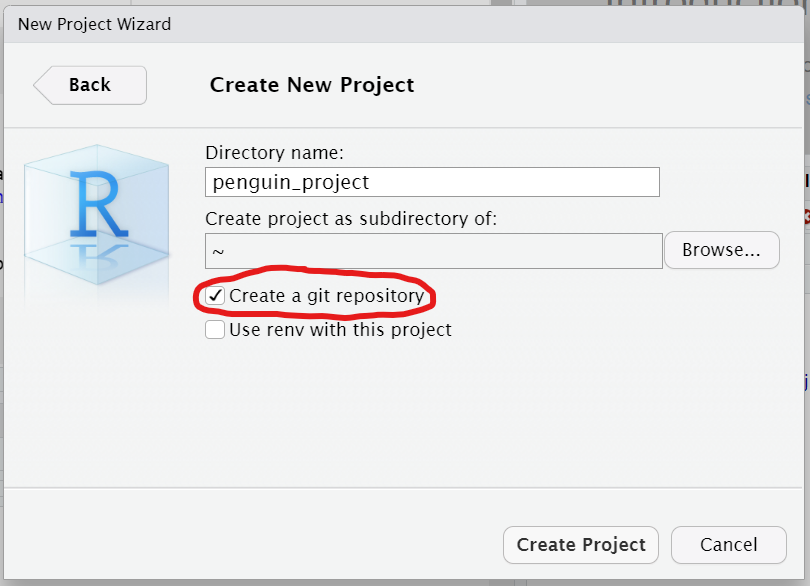
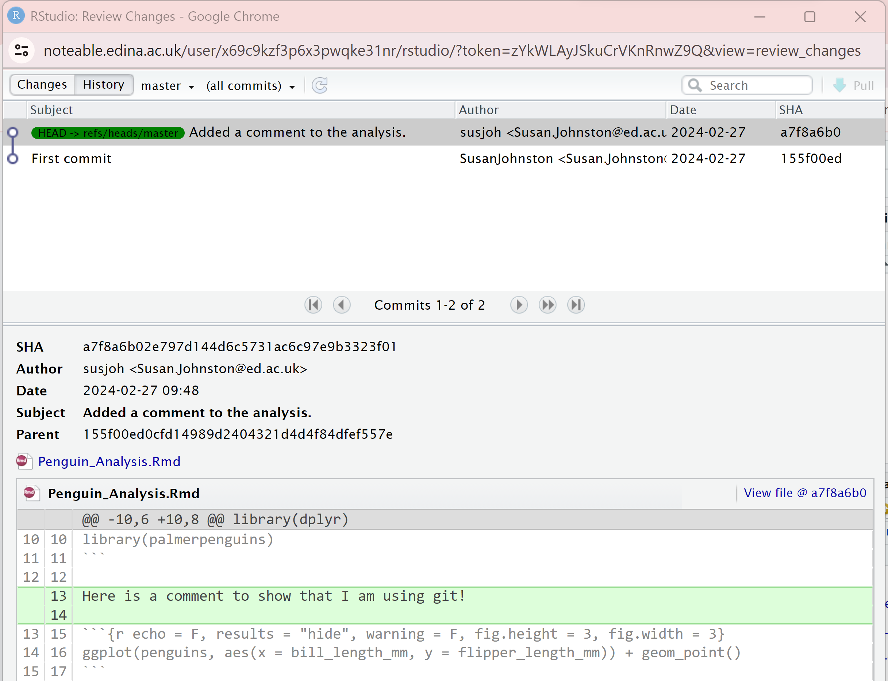

Introduction
This tutorial is based on R4all and Our Coding Club. It will explore how to write reports in R Markdown. By the end, you should be able to:
- Write, embed and render code and results into a document.
- Version control your scripts using
git.
We will continue to use the Palmer Penguin data set to explore relationships between various continuous and discrete traits.

Getting Set Up.
For this practical, we will use RStudio in Noteable. You can also do
this on your machine if you have Git installed from here
- Create a new project called
penguin_projectby clickingFile > New Project... > New Directory > New Project. Make sure that the optionCreate a git repositoryis selected:

- Make sure you have the Palmer penguin dataset installed and loaded by typing the following in the Console (make sure it is selected in the bottom left pane):
install.packages("palmerpenguins")
library(palmerpenguins)
data(penguins)
head(penguins)Writing reports with R Markdown.
R Markdown is a tool for writing reproducible reports in R.

It uses the knitr library by Yihui Xie to produce documents with
embedded code and figures in HTML, Word and PDF format. It can also be
used to create webpages and presentations.
Some great examples of what can be achieved are shown here.
Creating an R Markdown Document.
Open RStudio and create a new markdown document by going to:
File > New File > R Markdown...

In the window, name your document, select HTML and click
OK. RStudio should automatically create a template of an
example R Markdown document analysing the cars data set.
Take a look.
To “render†the script into a document, click Knit and
save when prompted. You will see that it produces an HTML document with
embedded figures, based on the text and code within the Markdown file.
Easy peasy!
Take some time to familiarise yourself with how the script matches to the output.
Essential Tips:
“Knitting†opens a new analysis session in the background. It will only work if your script can run from beginning to end with no errors.
It is possible to carry out basic formatting as well as adding headings, tables, lists and external figures. For the very basics of Markdown, go to
Help > Markdown Quick Reference.You can access very detailed cheatsheets through
Help > Cheatsheets > R Markdown Cheat Sheet.You can render to MS Word or PDF (NB. the latter requires a TeX install on your machine).
A convenient feature in RStudio is the
Show document outlinein the top right corner of the window pane.You can do this in a normal R script by clicking
Compile Report:
Exercise 1
Create a new, blank R Markdown Script with the following header:
---
title: "Palmer Penguins Analysis"
author: "Your Name"
date: "2024-02-26"
output: html_document
---Using Help > Markdown Quick Reference to help you,
add text with basic formatting (e.g. *italic*,
**bold**). Add headers for Introduction, Methods, Results,
etc.
Feeling advanced?: For
this practical, create a slideshow or tutorial instead of an HTML
document, using
File > New File > R Markdown... > Presentation
etc.
Getting Started with R Markdown.
Code can be embedded into the document in two ways.
First, it can be embedded as a “chunk”:
```{r}
head(penguins)
```Second, it can be embedded as inline code:
Two plus two equals
`r 2 + 2`.
which will print
Two plus two equals 4.
As you have seen in the example, there can be several code chunks within a document. This is how it works:
Running the
.Rmddocument opens a new R session.Each chunk is run in order and saved in the environment: all libraries and new objects are saved in the workspace for all subsequent chunks.
When clicking
Knit, RStudio assumes the directory containing the file is the working directory.All chunks in the document must be able to run without any errors, or the document will not render.
Structuring an R Markdown document.
The first chunk in your Markdown document is a good place to load libraries and data.
In this practical, we will use the libraries ggplot2,
dplyr and palmerpenguins. Put this chunk after
the header of your document and click Knit:
```{r}
library(ggplot2)
library(dplyr)
library(palmerpenguins)
```You may notice that this results in messages that is not relevant to
the document. You can control what is reported using additional
arguments within the chunk description. For example, adding
include=F to the first line after the r will
allow the commands to run invisibly:
```{r include = F}
library(ggplot2)
library(dplyr)
library(palmerpenguins)
```It can also control how results and figures are presented. Try adding
a new chunk and knitting:
```{r}
str(penguins)
ggplot(penguins, aes(x = bill_length_mm, y = flipper_length_mm)) + geom_point()
```and then adding echo = F, results = "hide" to the first
line, and knitting again:
```{r echo = F, results = "hide"}
str(penguins)
ggplot(penguins, aes(x = bill_length_mm, y = flipper_length_mm)) + geom_point()
```This will hide the code (echo = F) and code output
(results = "hide").
Some common options are given here:
| Command | Description |
|---|---|
eval = FALSE |
Means that the code will not be run and no results generated. This is useful for displaying example code or for disabling code. |
include = FALSE |
Runs the code but hides the code and results in the knitted document. Good for code you don’t want to clutter your report (e.g. loading libraries, data etc) |
echo = FALSE |
Hides the code but shows the results. |
message = FALSE or warning = FALSE |
Hides messages or warnings that might appear in the finished file. |
results = 'hide' |
Hide printed output; fig.show = 'hide' hides
plots. |
error = TRUE |
Causes the render to continue even if code returns an error. NB. Use this with caution! |
fig.width, fig.height |
Specify the size of output plots. |
Other Points to Note:
Code in R Markdown chunks can be run in the console as in a normal script
In RStudio, the default option is to show code output and figures in your script. To switch this function on and off, go to
Global options > R Markdown > Show output inline for all Markdown documentsand select your preferred setup.Want to learn more? More detailed information on this can be found at the Coding Club tutorial and the online R for Data Science book.
Exercise 2
Can you edit this chunk to hide the code, hide the warning message, and adjust the height and width of the plot to make it smaller?
```{r}
ggplot(penguins, aes(x = bill_length_mm, y = flipper_length_mm)) +
geom_point()
```Version control with git.
What is git?
{kind=link}
Git is a commonly used version control programme. You
may have heard of GitHub - this website
provides access to versions of code, but also allows collaborative
working, through bug reports, requests, task management, etc.
When you look at the upper right hand pane of RStudio, you may have a tab that says Git.
If you don’t have this:
- Check you installed git by typing
gitinto the Terminal tab in the lower left hand pane. If nothing appears, install git to your machine using the instructions at the start of the practical (or in Noteable, make a new project with git enabled). - Go to
Tools > Project Options... > Git/SVN > Version Control System: Select “Git”. You will probably have to restart RStudio. - If this isn’t an option but you installed git, try closing and re-opening RStudio.
- Ask me and I’ll try to help!
FYI: the .gitignore file is a text file specifying files
and directories that git should ignore - for example, your .Rhistory,
.RProj files and so on. For example, if you have very large data or
results files, you may not want to commit them to save disk space.
Configuring git
The very first time you run git, you need to configure it. Click into
the Terminal tab in the bottom left and enter these two
lines NB. Edit these to have your details and not
mine!:
git config --global user.email "Susan.Johnston@ed.ac.uk"
git config --global user.name "susjoh"The user name should work with anything; if you have a GitHub
account, you can use your user name for that (e.g. mine is
susjoh).
The first commit
Click on the boxes under the column Staged. These should
turn from question marks to a green A. This means that you
have added these files to the repository. Click Commit. A
new dialogue should appear:
Type in a commit message (such as “First commit”) and click “Commit”. You should see something like this:
The dialogue should clear and the Git tab should be
empty. You have now saved a snapshot in time. You can see your History
by clicking the History button on the Git tab (it has a
little clock).
More commits
Let’s make another commit. Edit your knitr/analysis file with something unimportant (maybe a comment) and save the file.
Now you will see your script with a blue M next to it.
This means the file has been modified. (If you don’t see it, press the
little reload arrow at the far right of the pane). Stage it and commit
it with a meaningful commit message. You will see the file
changes in the lower part of the box:
Look at the history again, and you will see the new edit. As you add
more commits, you can click on previous versions of files to see the
previous versions. You can also filter by file in the menu
(all commits).

A few comments:
Revisiting a previous commit: You can click on the
History tab and click on previous versions of files at each
commit. You can also filter by file in the menu
(all commits).
Reverting to the last commit: If you have made edits
but want to revert back to the last save, you can click on the file in
Git and click More > Revert. Use carefully
as you’ll lose all your changes - it’s better to commit the bad stuff
with a clear commit message and retrieve a previous version.
Feeling advanced?: If you would like to try connecting your RStudio with a GitHub account, you can try another tutorial: https://github.com/susjoh/MScIntroGitGithub.
Exercise: Using R as a Research Pipeline
For the rest of the session, you are going to put your new research skills to the test. Using the Palmer penguin dataset, think of your new research question.
Create a new script, save it to your main directory, and start exploring. Refer to last week’s notes and be creative! If you are newer to R, use the hints to get started. If you have some experience with R, try to do this without the hints!
Your objectives are (indented are optional):
Create a document outline for your report with headings for each section.
Click for Hint
Use #, ##, ### at the beginning of lines.
Load the libraries
ggplot2for plotting,dplyrfor data manipulation, andreadrfor writing data to files.Click for Hint
library(dplyr) library(ggplot2) library(readr)Load the
palmerpenguinslibrary and typedata("penguins").
Add an image of the penguins in your document (Use
)Filter the data to only look at a particular species or sex.
Save this edited dataset in
results/Click for Hint
library(palmerpenguins) data("penguins") # Subset the data penguins_edit <- filter(penguins, species == "Adelie") # Make a results folder if you don't have one already... dir.create("results") write_tsv(penguins_edit, "results/1_penguins_no_chinstrap.txt")
- Choose variables to create a scatterplot with a linear regression
with
ggplot().
Run a statistical test with
lm()Report the slope, intercept, P and adjusted R^2 values inline.
Save plot(s) to
figs/Click for Hint
# Make the plot ggplot(penguins_edit, aes(bill_length_mm, bill_depth_mm)) + geom_point() + stat_smooth(method = "lm") # Run a linear regression fit1 <- lm(bill_depth_mm ~ bill_length_mm, data = penguins_edit) fit1 <- summary(fit1) fit1 # Intercept = 11.41, Slope = 0.179, P = 6.67e-07, Adj R^2 = 0.148 # These results can be called inline using numerous methods e.g. tidy() in library(broom). This is the old school way, which can be called inline with e.g.r fit1$adj.r.squared: fit1$coefficients fit1$coefficients[1,1] fit1$coefficients[2,1] fit1$coefficients[2,4] fit1$adj.r.squared
Create a boxplot between a categorical and continuous variable, and run and report the results of a t-test using
t.test()Click for Hint
# Filter to just males and females penguins_edit <- filter(penguins_edit, !is.na(sex)) # Make a plot ggplot(penguins_edit, aes(sex, bill_depth_mm)) + geom_boxplot() # Run a t.test fit2 <- t.test(bill_depth_mm ~ sex, data = penguins_edit) fit2 fit2$statistic fit2$parameter fit2$p.valueKnit to create an HTML document that gives a basic report of your data, analysis and results. Try to minimise unnecessary code and messages being pasted into your document.